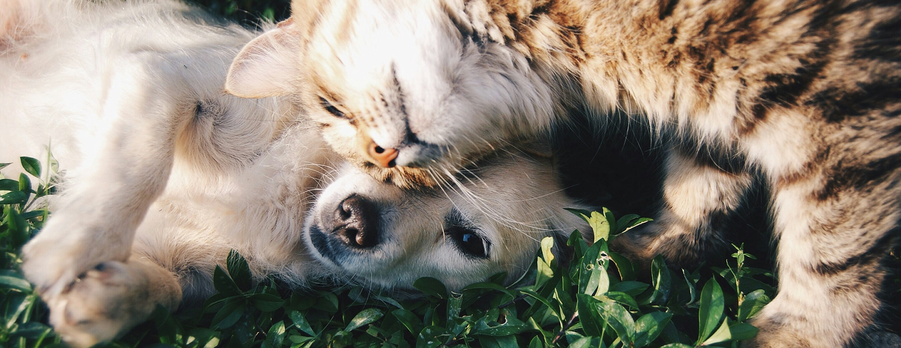
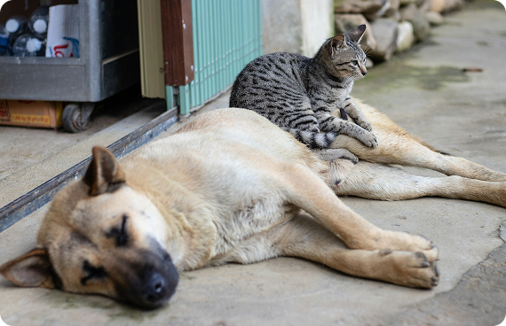
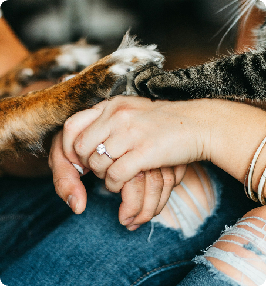
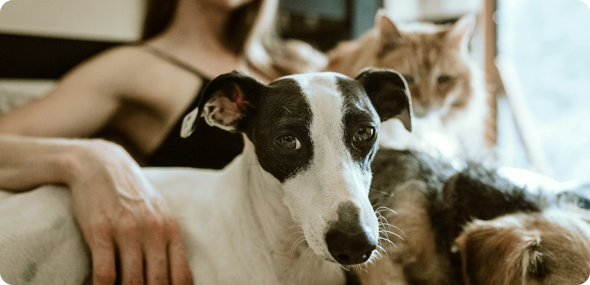

Focados em garantir o bem-estar, a segurança e os direitos dos animais, atuando na conscientização nas escolas, promovendo castração e feiras de adoção de animais vulneráveis.

Acreditamos que toda a sociedade tem responsabilidade diante dos animais, principalmente daqueles que foram abandonados.
Apoie a nossa iniciativa!
Somos uma organização sem fins lucrativos que atua na preservação do bem-estar e da qualidade de vida dos animais de rua de Bombinhas. Além disso, oferecemos suporte para adoções responsáveis e para o reencontro de animais perdidos. Confiamos que educar é a melhor prevenção e lutamos para formar seres humanos mais conscientes e com maior amor pela causa animal.
Acreditamos em uma atuação em duas frentes cruciais: a educação nas escolas e a diminuição ativa do número de animais nas ruas. Por esse motivo, além de fomentar ativamente a adoção desses animais, seguimos o Projeto CED (Capturar, Esterilizar e Devolver). Entendemos que castrar os animais que estão nas ruas tem um papel importante para diminuir o sofrimento de filhotes que porventura venham a nascer nesse ambiente que os expõe a diversos perigos.

Você pode ajudar!
Prestar apoio àqueles que mais precisam de nós é uma tarefa que alimenta o espírito. Nesse processo, aprendemos que o voluntariado é um meio muito poderoso de trazer um novo significado para a vida.
Entre em contato conosco e descubra como somar a essa luta!


Com a castração, impedimos que mais animais nasçam nas ruas e fiquem expostos às crueldades desse ambiente.
Menos animais nas ruas significa menos doenças circulando entre eles e menor risco de contágio para a população.
Auxiliamos na busca por animais perdidos, seja divulgando alertas de procura ou anunciando aqueles que foram encontrados na rua.
Doe pelo Pix:
Chave: 26.733.461/0001-67Ou diretamente para a conta:
SICREDIEscaneie para doar via Pix
*QR ilustrativoRua Sanhaçu, 712 - Bombas - Bombinhas/SC